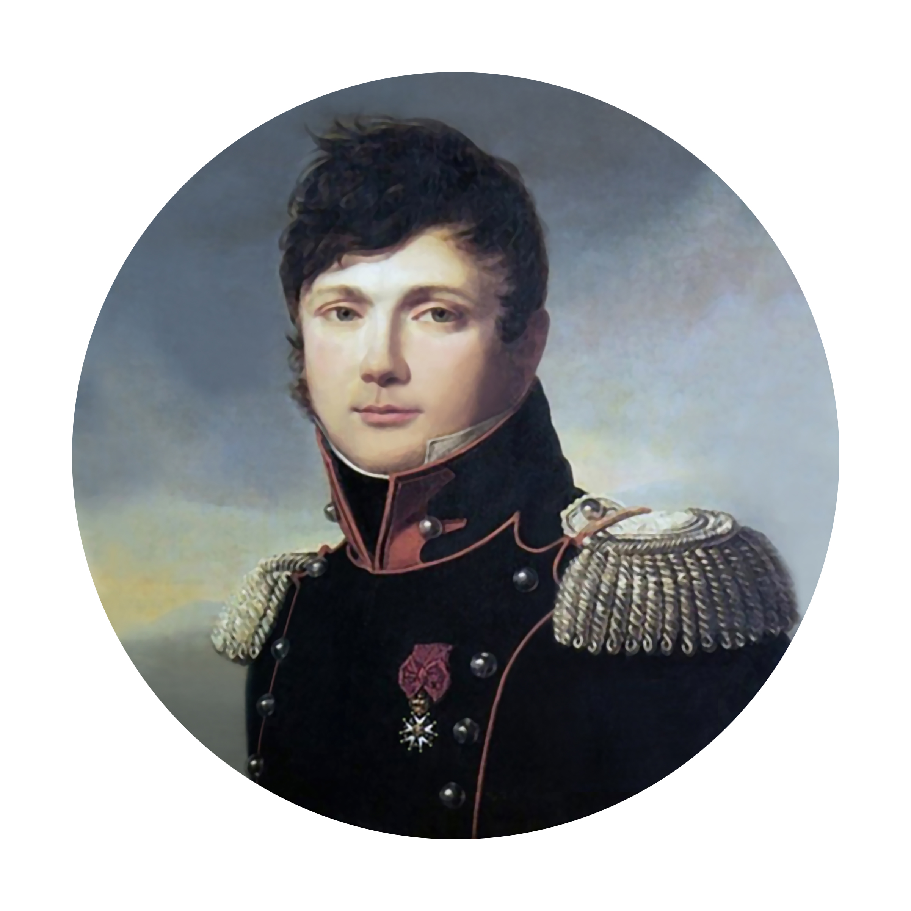
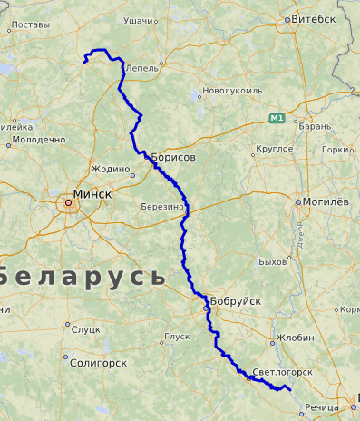
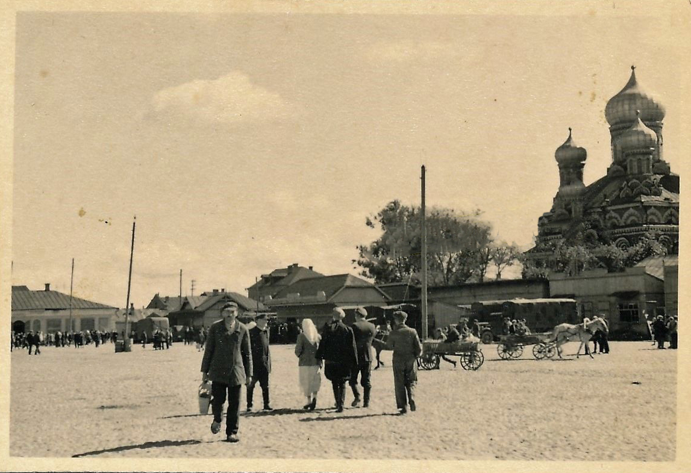
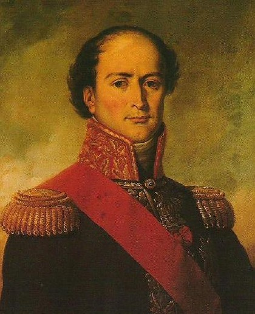

Against all odds - 베레지나 강변에서
게시: 2021-09-06T06:30:23+09:00
팔렌(Pahlen) 장군은 기분이 좋았습니다. 그가 보리소프를 지키던 돔브로프스키의 폴란드군을 비교적 손쉽게 격퇴한 것은 저녁 때였는데, 그는 보리소프 시내를 정리한 뒤 병사들에게 숙사를 배정하여 쉬게 하고 자신도 기분 좋게 근사한 늦은 저녁 식사를 대령하게 하여 이제 막 한입 먹기 시작했습니다. 바로 그때 갑자기 난데없는 총성과 함께 함성소리가 들여왔고, 팔렌은 그 식사를 끝내 마치지 못했습니다. 바로 몇십분 전, 팔렌이 이끄는 압도적인 1만의 러시아군에게 밀려 퇴각했던 돔브로프스키의 폴란드 사단은 후퇴하다가 우디노의 제2군단 선봉으로 전진하던 마르보(Jean-Baptiste Antoine Marcelin Marbot) 대령의 제23 기병 연대를 마주쳤습니다. 연대라고는 해도 이들도 숫자가 대폭 줄어 평소 대대급에도 미치지 못하는 500여명에 불과했지만, 이들은 모스크바로부터 후퇴한 부대가 아니라 폴로츠크로부터 후퇴를 해온 부대였고 따라서 그렇게까지 굶주리고 기진맥진하지는 않았습니다. 보리소프의 중요성을 잘 이해했던 이들은 돔브르프스키 사단과 함께 그대로 보리소프로 돌진했습니다. 완승에 취해있던 러시아군은 완전 무방비 상태였습니다. 프랑스군의 기습은 완벽한 성공을 거두었고, 잠결에 어떨떨했던 러시아군 중 살아서 보리소프의 다리를 건넌 이들은 전체의 10%에 불과한 1천명에 불과했습니다. 나머지 9천은 사상자가 되거나 가지고 왔던 10문의 대포 전부와 함께 포로가 되었습니다. 그러나 이렇게 볼썽사납게 도주하던 러시아군도 할 일은 하고 갔습니다. 나폴레옹이 베레지나 강을 건널 수 있는 유일한 수단이던 보리소프의 목제 다리에 불을 지르고 갔던 것입니다.

(11월 22일 밤 보리소프를 탈환한 마르보 대령은 1782년 생으로서 란(Jean Lannes) 원수가 소위 시절 상관이던 마르보 장군의 아들이었고 란은 어린 마르보에게 자신의 권총을 가지고 놀게 해주곤 했습니다. 훗날 란 원수가 아스페른-에슬링 전투에서 치명상을 입고 결국 사망할 때 최후까지 그의 대소변을 치워주며 병간호를 했던 것이 바로 이 마르보였습니다. 그는 훗날 나폴레옹에 대한 회고록을 써서 크게 유명해졌고 그의 회고록은 나폴레옹 본인도 극찬을 했습니다. 그는 부르봉 왕정 하에서는 망명을 해야 했으나, 7월 혁명으로 들어선 루이 필립 왕 밑에서 다시 고위직에 오릅니다.) 이 소식을 뒤늦게 들은 나폴레옹은 불과 며칠전 오르샤의 병기고에서 발견했던 조립식 부교 세트를 불살라 버린 것을 땅을 치며 후회했습니다. 특히 요 며칠 동안 날씨가 풀려 기온이 포근해졌던 것이 나폴레옹과 그랑다르메의 목을 조르는 밧줄이 될 줄은 전혀 예상하지 못했기에 더욱 그랬습니다. 차라리 계속 강추위가 이어졌다면 얼어붙은 베레지나 강을 걸어서 건널 수 있었겠으나, 지금은 강이 녹았던 것입니다. 베레지나 강은 걸어서 건너기에는 너무 깊었지만 (모든 강이 그렇듯이) 그래도 잘 찾아보면 걸어서 건널 얕은 여울목을 찾을 수도 있었을 것입니다. 그러나 지금은 차가운 강물 위로 큼직한 얼음덩어리들이 위협적으로 떠내려가는 상황이라서 사람이 강을 건너기에는 정말 최악의 조건이었습니다. 나폴레옹은 이렇게 된 바에야 병력을 다 끌어모아 베레지나 강의 상류를 향해 북쪽으로 진격, 그 쪽에서 내려오는 비트겐슈타인과 정면 승부를 벌여 격퇴한 뒤 베레지나 강의 수원지를 돌아 빌나로 진격하는 방안도 고려해보았습니다. 이론상으로는 약 8~9일 정도 우회하면 충분히 가능한 시나리오이긴 했습니다만, 부하들은 그 일대의 지형이 그런 기동전에는 부적절하다고 반대했습니다. 결국 남은 것은 딱 하나, 어떻게든 베레지나에 다리를 놓아야 했습니다. 그리고 강건너에는 러시아군이 두 눈을 시퍼렇게 뜨고 대포알을 날릴 준비를 하고 있었습니다. 등 뒤도 긴박하기는 마찬가지였습니다. 쿠투조프가 쫓아오고 있었으니까요. 아마 2~3일 안에 북쪽에서는 비트겐슈타인의 부대가, 동쪽에서는 밀로라도비치의 선봉부대가 나타날 것으로 예상되었습니다. 상황이 이보다 더 절망적일 수는 없었습니다.

(저 남쪽에서 드네프르 강과 합류하는 베레지나 강은 길이가 약 560km로서 그다지 긴 강이 아닙니다. 지도 중간에 보이는 Бори́сов가 바로 보리소프(현대의 벨라루스식 표기로는 Barysaŭ)입니다. 북쪽으로 200km 정도 우회하면 베레지나 강을 건너지 않고도 빌나로 갈 수도 있습니다.)

(제2차 세계대전 중 보리소프의 풍경입니다. 지금은 인구 약 18만의 작은 도시입니다.) 이런 위기 상황일 수록 위대한 인물과 그릇이 작은 인간과는 차이가 나는 법입니다. 회고록을 쓴 많은 이들의 공통된 목격담은 이때 나폴레옹은 정말 의연하고 침착한 모습을 보여주었다고 합니다. 그는 11월 23일, 좁은 보리소프 시내로 꾸역꾸역 밀려드는 각 부대들과 많은 낙오병, 종군 상인 등의 민간인들의 무리가 난장판을 만드는 가운데에서도 차분히 상황을 분석한 뒤, 보리소프의 불타버린 다리를 수리하도록 하고 당장 강 건너에서 그랑다르메를 감시하고 있는 러시아군에게 혼란을 주기 위해 강 하류 쪽으로 분견대를 파견하여 마치 거기서 다리를 놓을 것처럼 행동하라고 지시했습니다. 이 분견대는 강 하류로 약 하루 행군거리에서 자리를 잡고 인근 마을의 유태인 상인들과 보란 듯이 흥정을 하며 여기에 임시 다리를 놓고 그랑다르메 전체가 도강할 것이라고 공언을 했습니다. 이들은 유태인 상인들이 이 소식을 들고 쪼르르 러시아군을 찾아갈 것이라고 확신을 했습니다. 하지만 거센 강물 속에 다리를 놓는다는 것은 쉬운 일이 아니었고 누구나 할 수 있는 일도 아니었습니다. 보리소프의 다리를 수리한다는 나폴레옹의 결정이 내려지자 그 과업을 수행해낼 공병대, 정확하게는 부교병(pontonnier)들의 지휘관이 현장으로 불려왔습니다. 바로 에블레(Jean Baptiste Eblé) 장군이었습니다.

(에블레 장군입니다. 당시 군 장교들 중 수학에 솜씨가 있었던 사람들은 전문 기술 직종으로 포병 또는 공병 병과로 배치되었는데, 그 중에서도 출세 코스는 역시 포병 병과였습니다. 프랑스군의 경우 포병 장교가 공병 장교로 전출되는 경우도 종종 있었는데, 에블레가 그 대표적인 사례로서 그는 원래 그의 아버지처럼 포병 장교였고 아우스테를리츠 전투에서도 포병을 지휘했습니다. 스페인에서도 포병으로 복무하던 그가 공병 부대를 맡은 것은 1811년 말 나폴레옹이 러시아 침공을 위해 유럽의 온갖 병력을 다 끌어모을 때였습니다. 영국군의 경우 공병 장교는 하급 전문직 취급을 받아 매관제도(purchase system, 장교직을 돈으로 사고 파는 것)에서도 제외되었고 진급도 매우 느렸습니다. 에블레 장군은 베레지나에서 그랑다르메를 구해낸 일등 공신이었으나, 이때 너무 과로한 나머지 바로 다음 달 프로이센의 쾨니히스베르크에서 병사하고 말았습니다. 그 사실을 몰랐던 나폴레옹은 그 다음 달인 1813년 1월 그를 포병 총감에 임명했다가 비로소 그의 죽음을 알게 되었습니다. 에블레의 공로에 어떻게든 보답하고 싶었던 나폴레옹은 즉각 그의 와이프를 백작 부인에 봉했다고 합니다.)

(병참, 그러니까 보급은 무엇보다 중요한 병과 중 하나입니다. 전투는 총칼로 이기지만 전쟁은 보급으로 이기는 법이거든요. 대표적인 예가 바로 나폴레옹의 러시아 원정입니다. 그는 러시아에 진입한 이후 크라스니 전투 때까지 단 한 번도 지지 않았으나 크라스니 전투 훨씬 이전에 이미 패배한 상태였지요. 병참이 이렇게 중요한데도, 영어로는 logistics, 불어로는 logistique인 병참이라는 단어는 나폴레옹 전쟁 당시만 해도 아예 존재하지 않는 단어였습니다. 이 단어를 창조하고 병참의 중요성에 대해 강조한 사람이 바로 조미니였습니다. 조미니는 1830년 그의 명저 '병법 개요'(Précis de l'Art de la Guerre)에서 이 단어를 처음 썼는데, 병사들의 숙영을 뜻하는 logis (영어로는 lodge)라는 말에서 이 신조어를 만들어냈습니다. 아마 나폴레옹의 패배를 옆에서 조미니가 보고 배운 바가 아주 많았던 모양입니다.) 현장에 도착한 에블레 장군과 그의 부교병들은 생각했던 것보다 베레지나 강의 폭이 더 넓은 것을 보고 여기에 다리를 놓는 것은 사실상 불가능하다고 판단했습니다. 훗날 클라우제비츠와 함께 군사학의 권위자가 되는 조미니(Antoine-Henri Jomini) 장군도 이때 에블레의 옆에 서있었는데, 조미니도 똑같은 생각이었습니다. 강 폭이 너무 넓으면 좁혀야 합니다. 어떻게? 상류로 가면 됩니다. 그들은 보리소프가 아닌 더 상류 지점에 다리를 놓아야 한다고 생각했습니다. 그런데 때마침 우디노의 부하 중 코르비노(Corbineaux)라는 장군이 딱 적절한 장소를 알고 있었습니다. 보리소프에서 상류로 12km 정도 떨어진 스투지엔카(Studzienka)라는 마을이 있는데, 그 곳에 비교적 얕은 여울목이 있었던 것입니다. 나폴레옹은 11월 24일 밤 우디노로부터 이 소식을 전해듣고 처음에는 이 계획, 즉 스투지엔카에 다리를 놓는다는 것에 대해 반대했고, 원안대로 보리소프에 다리를 놓기를 고집했습니다. 그는 강 건너의 치차고프의 대군과 정면 승부를 벌여 격파한 뒤, 민스크로 가서 슈바르첸베르크의 오스트리아군과 합류할 것을 꿈꿨기 때문이었습니다. 그러나 우디노가 재차 그 계획의 어려움과 스투지엔카의 적절성에 대해 호소하자 마침내 11월 25일에 스투지엔카 도강 계획을 승인합니다. 하지만 이렇게 계획을 정했다고 해서 모든 일이 잘 해결된다는 뜻은 아니었습니다. 일단 베레지나 서쪽 강변에는 러시아군이 우글거렸습니다. 강변에는 빠짐없이 코삭 기병들이 배치되어 프랑스군의 동태를 감시했고, 어느 쪽에 다리를 놓을 것이 확실시 되면 프랑스군을 임시 다리와 함께 피떡으로 만들어놓을 러시아 포병대가 바로 인근에서 대기 중이었습니다. 게다가 다리는 정신력이나 충성심으로 만들 수 있는 물건이 아니었습니다. 튼튼한 목재가 많이, 아주 많이 필요했고, 그런 목재를 깎고 다듬고 연결해서 다리를 만들기 위해서는 톱, 망치, 끌 등 여러가지 도구와 함께 죔쇠, 못 등이 잔뜩 필요했습니다. 대포 만능주의자 나폴레옹은 대포를 가능한 한 많이 챙겨올 생각만 했지, 볼품없고 자질구레한 톱과 못, 망치 등을 챙길 생각은 아예 하지 않았습니다. 그리고 이제 그 대가를 그랑다르메 전체가 치를 순간이었고요. 그런데 11월 25일 저녁에 스투지엔카 현장에 도착한 나폴레옹의 눈 앞에는 기적이 벌어지고 있었습니다. Source : 1812 Napoleon's Fatal March on Moscow by Adam Zamoyski
https://en.wikipedia.org/wiki/Battle_of_Berezina https://en.wikipedia.org/wiki/Berezina https://en.wikipedia.org/wiki/Marcellin_Marbot https://en.wikipedia.org/wiki/Barysaw https://en.wikipedia.org/wiki/Jean_Baptiste_Ebl%C3%A9 https://www.frenchempire.net/biographies/eble/ https://en.wikipedia.org/wiki/Logistics